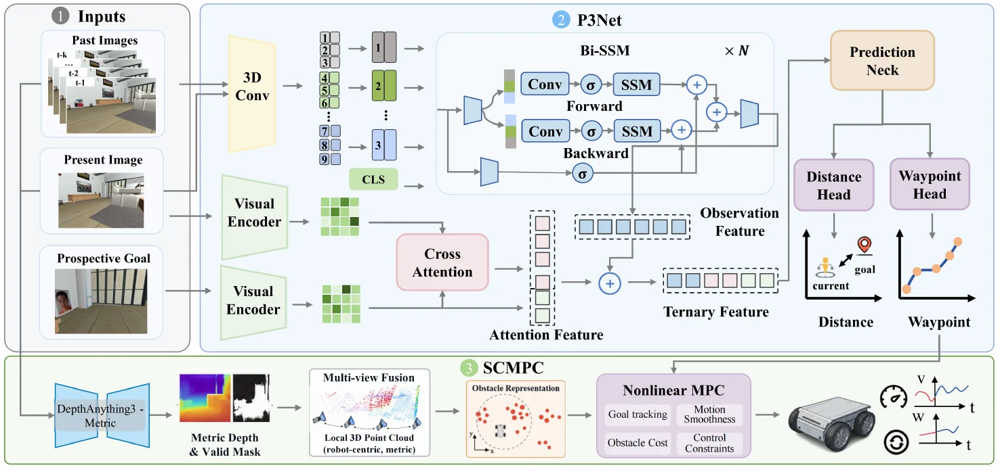

返修Under revision
SCTNav: Scene-Constrained Monocular Navigation with Ternary Spatio-Temporal Waypoint PredictionSCTNav: Scene-Constrained Monocular Navigation with Ternary Spatio-Temporal Waypoint Prediction
IEEE Robotics and Automation Letters 投稿稿Manuscript submitted to IEEE Robotics and Automation Letters
全文暂不公开。Full text is not publicly available.

研究概述Overview
SCTNav 研究单目图像目标导航。P3Net 融合过去观测、当前画面和未来目标图像来预测路点；SCMPC 从图像序列恢复度量一致的场景约束，并结合机器人运动学，以非线性模型预测控制生成控制指令。稿件包含仿真和室内外真实机器人实验。SCTNav studies monocular image-goal navigation. P3Net fuses past observations, the current view, and a future goal image to predict waypoints. SCMPC recovers metrically consistent scene constraints from image sequences and uses nonlinear model predictive control with robot kinematics to produce actions. The manuscript includes simulation and real robot experiments indoors and outdoors.
核心工作Key Contributions
- 通过过去、现在、未来三类视觉信息预测导航路点。Predicts navigation waypoints from past, present, and future visual information.
- 把由图像恢复的场景约束接入 MPC，连接视觉规划与可执行控制。Connects visual planning to executable control by incorporating image-derived scene constraints into MPC.
论文报告的实验结果Results Reported in the Paper
39/40真实长走廊导航成功次数，40 次测试（稿件报告）Successful long-corridor runs out of 40 real-robot trials (manuscript reported)